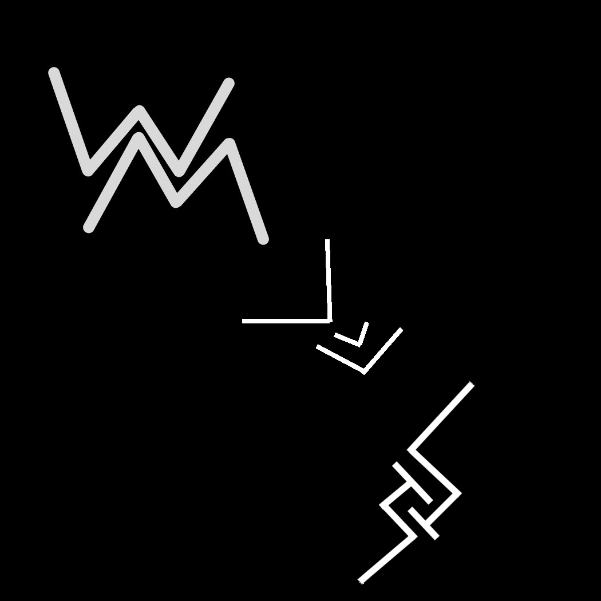

О компании
Торговая компания была основана выходцами из WALM в 2035 году с целью дистрибуции игр и программ студии. Все было стабильно, пока в 2038 году не началась внутренняя борьба за совет директоров компании (WALM в этом не участвовала). В результате внутренних разборок директором стал Никита Трумодиров
Сотрудничество со студией WALM осталась, однако в планах появилось сотрудничество с другими студиями. Таким образом капитализация компании увеличилось втрое, а затем и увеличись производственные мощи.